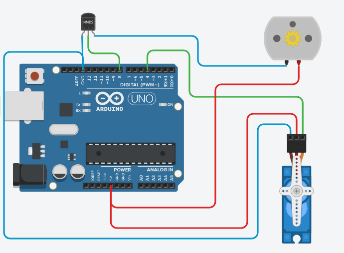
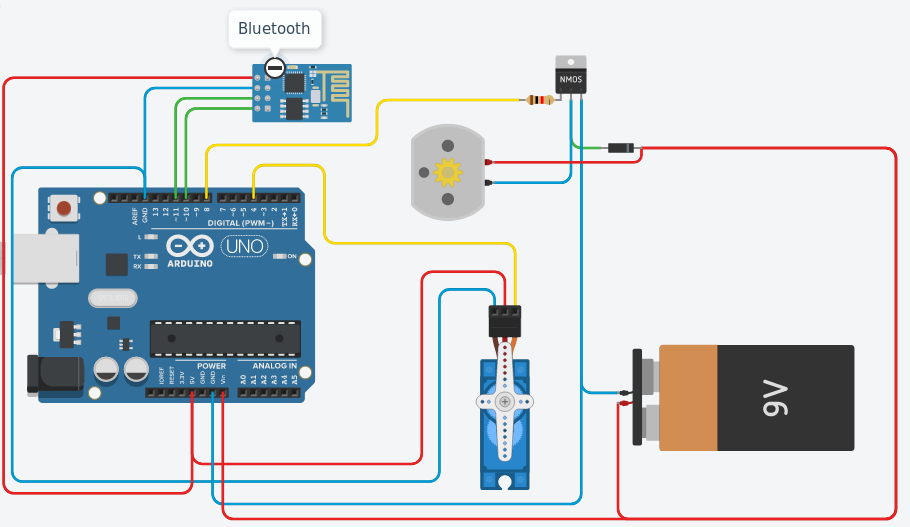

Lostsh
Open Boat
RC boat based on Arduino
Is an open source boat project. Simple, easy to do.
The main objective of this project is to create a boat as simple as possible, with almost what can come to hand.
The bluetooth module I used is a BLE 4.0 module (HM-10) it is the only more delicate element to obtain, however we can easily replace it with a more classic bluetooth module (HM-05) or well, according to the desires, and the components that you have by a wifi module, or a RC receiver.
Requirement
without the motor controller :
- Arduino
- DC Motor
- Servo Motor
- Mosfets MMOS
- Bluetooth Module (HM-10)
If you want to add the motor controller, in addition to the previous components you will need:
- NPN Transistor
- Diode (I use a 1N4007)
- Resistor 1KΩ (or something close to it)
- In this version, you don't need the MMOS Mosfets
Schema
| Without the bluetooth module | With Blutooth module, and the most simple version, don't have motor controller just turn it ON/OFF | With the motor controller and the bluetooth |
|  |

|
 |
| Simple schema, for a simple circuit without the bluetooth | Complete shema of the V1 of the system | Adding a Digital Motor controller |
More
For more information, visit the project's github page.